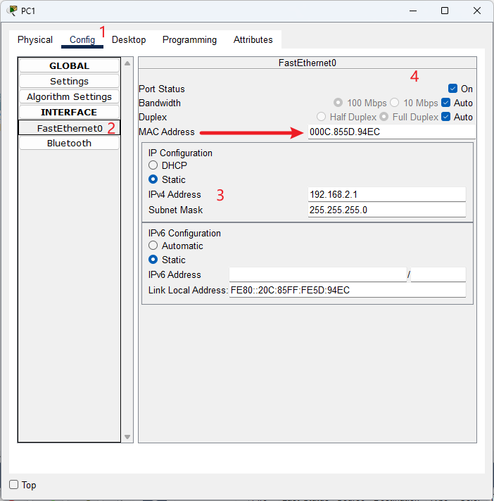
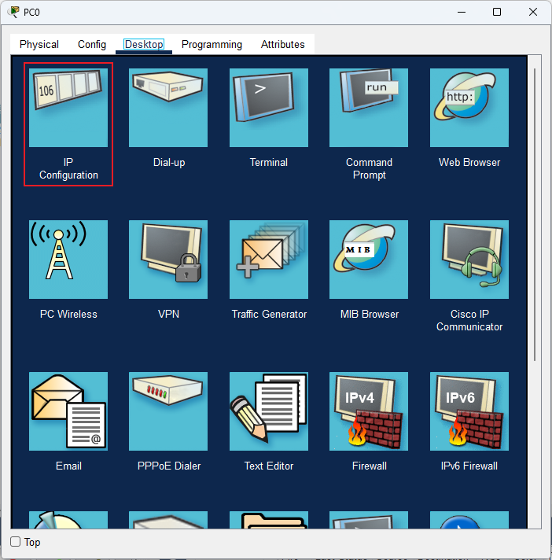
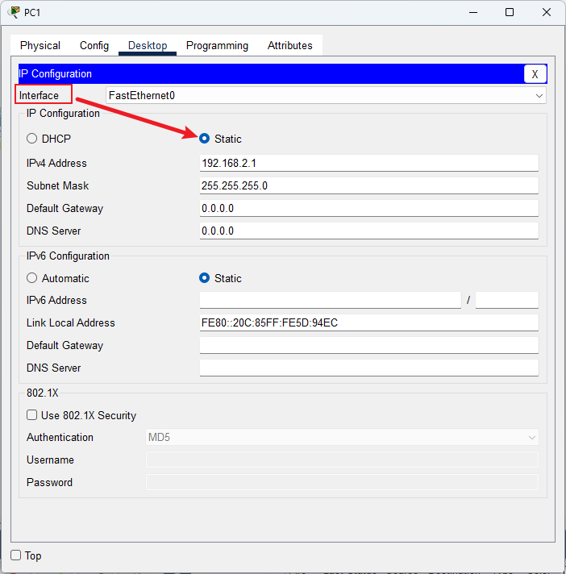

- 基本配置
- 方案1：在配置（Config） → 端口（Interface）中配置

IP 地址配置
- 方案2：在桌面（Desktop） → IP 配置（IP Configuration）中配置


IP 地址配置
- 地址解析协议 ARP
- 根据目标设备的 IP 地址，查询目标设备的 MAC 地址，以保证通信的顺利进行
- ARP 的命令一般有三个用法：查询、添加、删除
1. 查看
- 显示当期 IP 地址对应的 MAC 地址
arp -a
2. 删除
- 删除所有 ARP 记录
- 如果想彻底清空 ARP 列表，需要禁止所有网络连接，否则网络数据交互过程中仍然会产生新的 ARP 列表
arp -d [IP]
3. 为指定主机添加一条静态条目
- 手动添加或绑定一条ARP记录，也叫绑定 MAC 地址命令
- 手动添加的记录，称为静态记录；通过 ARP 添加的记录是动态记录
- 在网络中，通常在办公网络或监控项目中，为了防止用户乱改 IP 地址或 IP 地址冲突，需要给 IP 地址绑定设备的 MAC 地址
- 绑定后记得查看，确保成功
arp -s IP地址 MAC地址
大多数 ARP 静态绑定操作都需要网络管理员权限